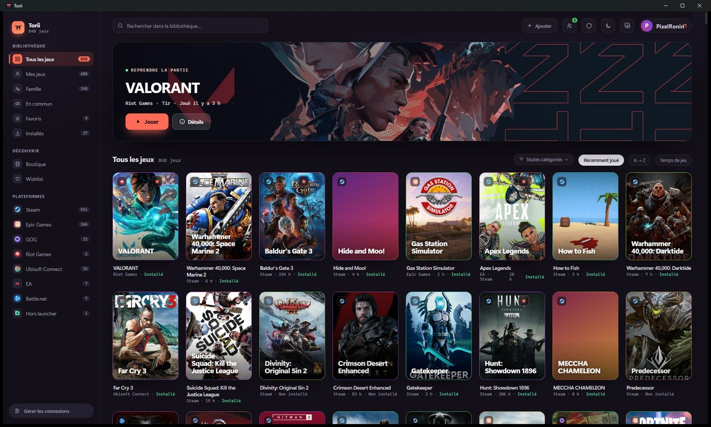

Interface moderne, en français
Jaquettes en grand, thème clair et sombre, et des descriptions de jeux réellement en français — pas une traduction automatique de l'anglais.
Steam, Epic, GOG, Ubisoft, EA, Battle.net — et même ceux qui ne viennent d'aucun launcher. Torii les réunit dans une bibliothèque, avec leurs jaquettes, leur temps de jeu et ce que jouent tes amis.
Télécharger pour WindowsWindows 10 et 11 · 64 bits · gratuit ou télécharger le .msi
Essayer la démo dans le navigateur sans rien installer

Une bibliothèque, pas cinq
Torii lit tes launchers installés et tes comptes en ligne. Un jeu possédé sur Steam et sur GOG n'apparaît qu'une fois, avec le choix du launcher au moment de jouer. Les jaquettes, le temps de jeu et la date de la dernière partie viennent avec.
Sans launcher, ni raccourci à créer
Genshin Impact, Dofus, un jeu du Game Pass, un exécutable posé sur le disque : Torii les repère tout seuls quand tu y joues, retrouve leur vrai titre et leur jaquette, et les range avec les autres.
Il ne devine pas au hasard — il s'appuie sur la liste de jeux que Windows tient déjà. Un navigateur ou un traitement de texte ne risque pas d'y entrer.
Jouer ensemble
Vois qui joue à quoi en ce moment, ce que vous avez en commun, et lance la même partie même si vous ne l'avez pas sur le même launcher. Un ami sur GOG et toi sur Steam, c'est le même jeu.
Rien ne part tant que tu ne l'as pas autorisé. Trois niveaux de partage, jeux masqués exclus, et aucun historique de ce que tu joues n'est conservé.
À quoi on joue ce soir ?
Torii croise ta bibliothèque avec celle de tes amis et sort la liste des jeux que vous possédez tous les deux. Fini les « tu l'as, toi ? » à rallonge avant de trouver quoi lancer.
Coche plusieurs amis d'un coup : tu obtiens ce que le groupe entier peut lancer ensemble, ce soir, sans que personne n'ait à racheter quoi que ce soit.
Chaque jeu, sa page
Bannière, description en français, genre, développeur, taille sur le disque, captures d'écran, succès débloqués, temps de jeu et nombre de joueurs connectés en ce moment. Le tout sans quitter Torii.
Avant d'acheter
Une boutique intégrée compare les prix entre revendeurs et suit ta wishlist Steam pour te dire quand un jeu tombe à son plus bas historique.
Et les jeux prêtés par ta famille via le partage Steam apparaissent aussi, clairement identifiés — sans jamais se faire passer pour des jeux que tu possèdes.
Si tu cherches un gestionnaire de bibliothèque de jeux pour Windows, voilà en clair ce que Torii apporte — à toi de juger ce qui compte pour toi.
Jaquettes en grand, thème clair et sombre, et des descriptions de jeux réellement en français — pas une traduction automatique de l'anglais.
La présence de tes amis, les jeux en commun et la possibilité de lancer la même partie, quel que soit le launcher de chacun.
Les jeux qu'aucun launcher ne déclare sont repérés pendant que tu y joues, puis identifiés et rangés tout seuls.
Wishlist Steam suivie, prix comparés entre revendeurs, et alerte quand un jeu atteint son plus bas historique.
Quelques mégaoctets, un vrai exécutable Windows. Il surveille tes parties sans peser sur la machine pendant que tu joues.
Aucune publicité, aucune revente de données. Le compte n'est nécessaire que pour la partie sociale, et reste facultatif.
Oui — le même code, compilé pour le navigateur. Seule la bibliothèque change : celle de la démo est inventée. Tout ce qui doit parler à Windows (lancer un jeu, lire tes launchers, se connecter à un compte) reste évidemment sans effet dans un onglet. Ouvrir la démo.
Oui, entièrement, et sans publicité. Le téléchargement ne demande pas de compte.
Steam, Epic Games, GOG, Ubisoft Connect, EA, Battle.net et Riot Games. Les jeux ajoutés à la main et ceux détectés hors launcher s'y ajoutent.
Non. La bibliothèque fonctionne sans aucun compte Torii. Il n'est nécessaire que pour la partie sociale — voir tes amis et leur présence — et reste facultatif.
Oui. Windows signale toute application dont l'auteur n'a pas payé de certificat de signature, indépendamment du contenu du fichier. Pour continuer : Informations complémentaires puis Exécuter quand même. Le fichier est construit publiquement par GitHub Actions à partir du code du dépôt.
Pas aujourd'hui : Torii est une application Windows (10 et 11, 64 bits).
Rien ne part tant que tu ne l'as pas activé. La présence et le partage de bibliothèque sont éteints par défaut, les jeux masqués n'en font jamais partie, et aucun historique de ce que tu joues n'est conservé sur le serveur.
Avant d'installer quoi que ce soit
La démo, c'est l'application elle-même, telle quelle, dans ton navigateur — posée sur une bibliothèque inventée d'une trentaine de vrais jeux. Clique dans la grille, ouvre une fiche, change de thème, fouille les amis.
Ce qui touche à ta machine — lancer un jeu, connecter un compte — n'y fait rien, forcément : il n'y a pas de machine derrière.
Ouvrir la démoInstallation en une minute. Rien à configurer : Torii trouve tes jeux tout seul.
Télécharger pour WindowsWindows affichera un avertissement d'éditeur inconnu : Informations complémentaires → Exécuter quand même.